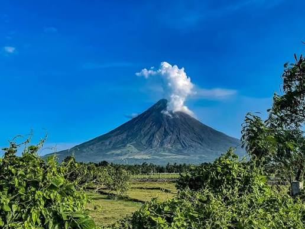

Mayon Volcano
Mayon (Central Bikol: Bulkan Mayon; Tagalog: Bulkang Mayon, IPA: [mɐˈjɔn]), also known as Mount Mayon and Mayon Volcano, is an active stratovolcano in the province of Albay in Bicol, Philippines. A popular tourist destination, it is renowned for its "perfect cone" owing to its symmetric conical shape, and is regarded as sacred in Philippine mythology.[5]

Baguio
Baguio is a highly urbanized, mountainous city in northern Luzon, Philippines, renowned as the "Summer Capital of the Philippines". Located about 1,500 meters (5,000 feet) above sea level in the Cordillera ranges, it features a cool, temperate climate and is famous for its pine forests and rich indigenous culture.

luneta park
Rizal Park, widely known as Luneta Park, is a massive 58-hectare historic urban park in the heart of Manila. Located adjacent to the historic walled city of Intramuros and fronting Manila Bay, it serves as a central hub for national pride, leisure, and historical remembrance for Filipinos.

intramuros
Intramuros is the historic, 0.67-square-kilometer walled city in Manila. Built by the Spanish in the late 1500s, it was the religious, administrative, and economic center of the Philippines during the colonial era. Today, it remains a major tourist and cultural destination.

venice grand canal
Venice is a historic, car-free city in northeastern Italy, built across 126 islands linked by 472 bridges. Famous for its winding canals, gondolas, and stunning Byzantine and Renaissance architecture, this UNESCO World Heritage site offers a truly unique glimpse into a medieval maritime empire.